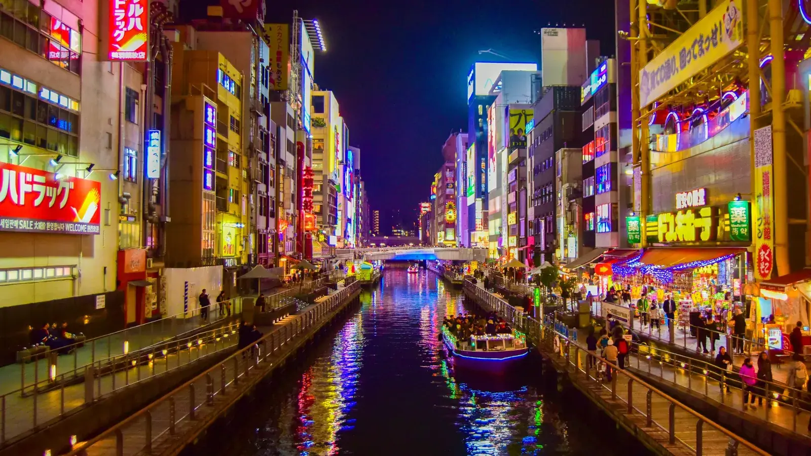

In breve
Dormi vicino alla stazione di Kyoto? Prendi il JR Special Rapid (shinkaisoku): circa 29 minuti fino alla stazione di Osaka per 580 ¥, uno ogni 15 minuti circa, valido col JR Pass. Dormi a Gion o Kawaramachi? Prendi l'Hankyu da Kyoto-kawaramachi: circa 43 minuti fino a Osaka-umeda per circa 410 ¥. Non serve prenotare: basta passare la carta IC al tornello.
Confronto dei treni
| Treno | Da → a | Tempo | Prezzo (solo andata) | JR Pass |
|---|---|---|---|---|
| JR Special Rapid | Staz. Kyoto → Shin-Osaka → Staz. Osaka | ~29 min | 580 ¥ | Sì |
| Hankyu Limited Express | Kyoto-kawaramachi / Karasuma → Osaka-umeda | ~43 min | ~410 ¥ | No |
| Keihan Limited Express | Gion-shijo / Sanjo → Kyobashi / Yodoyabashi | ~50 min | ~490 ¥ | No |
| Shinkansen | Staz. Kyoto → Shin-Osaka | ~15 min | 1.450 ¥ posto libero | Hikari / Kodama |
Prezzi verificati a novembre 2026 e arrotondati: possono cambiare. Le carrozze comfort di Hankyu e Keihan (PRiVACE, Premium Car) costano di più.
Quale treno da dove
- Zona stazione di Kyoto → JR Special Rapid fino alla stazione di Osaka (Umeda). Per gli Universal Studios cambia a Osaka per la JR Yumesaki Line.
- Gion, Kawaramachi, mercato Nishiki → Hankyu da Kyoto-kawaramachi o Karasuma fino a Osaka-umeda.
- Fushimi Inari, Kyoto est → Keihan: la stazione Fushimi-Inari è sulla stessa linea, puoi vedere il santuario lungo la strada.
- Diretto a Namba / Dotonbori → arrivi a Umeda (JR o Hankyu) e prendi la metro Midosuji verso sud, oppure Keihan fino a Yodoyabashi, che è sulla stessa linea della metro.
- Aeroporto del Kansai → il limited express JR Haruka parte diretto dalla stazione di Kyoto: non serve passare da Osaka.
JR Special Rapid: la scelta standard
- Alla stazione di Kyoto segui i cartelli JR Kyoto Line direzione Osaka. Sul tabellone cerca Special Rapid (新快速): i treni locali e rapid costano uguale ma ci mettono di più.
- Entra con ICOCA, Suica o PASMO, oppure compra il biglietto da 580 ¥ alla macchinetta.
- Ferma a Shin-Osaka (~23 min) e poi alla stazione di Osaka (~29 min).
Hankyu: il più economico, dal centro di Kyoto
I Limited Express partono da Kyoto-kawaramachi (accanto a Gion e al fiume Kamo) e da Karasuma e arrivano a Osaka-umeda in circa 43 minuti. La stazione Hankyu Osaka-umeda è un edificio diverso dalla stazione JR di Osaka, a pochi minuti a piedi. Nel fine settimana alcune corse sono il Kyo-train Garaku, treno panoramico con arredi in stile tradizionale, senza supplemento.
Keihan: per Gion e Fushimi Inari
Il Keihan corre lungo il lato est di Kyoto (Demachiyanagi, Sanjo, Gion-shijo, Fushimi-Inari) fino a Kyobashi e Yodoyabashi a Osaka, in circa 50 minuti. È la scelta migliore se unisci il viaggio alla visita del Fushimi Inari; Yodoyabashi è comoda per Kitahama e Nakanoshima.
Shinkansen: solo se ti torna comodo
Il treno proiettile ci mette circa 15 minuti, ma costa circa 1.450 ¥ e arriva a Shin-Osaka, fuori dal centro. Conviene se hai il JR Pass (Hikari e Kodama), se prosegui per Hiroshima o Tokyo, o se sei già ai tornelli dello Shinkansen. Per Osaka città lo Special Rapid porta a porta è di solito altrettanto veloce. Approfondisci nella guida allo Shinkansen.
Consigli
- Con valigie grandi evita le 7:30–9:30 nei giorni feriali: sono tutti treni dei pendolari. Oppure spedisci i bagagli con il takkyubin da hotel a hotel.
- Una sola carta IC vale su tutte e quattro le linee, sulla metro di Osaka e sui bus.
- Kyoto e Osaka sono abbastanza vicine per una gita in giornata in entrambe le direzioni. Organizza i giorni con Kyoto in 2 giorni e Osaka in 2 giorni.
- Cerchi una camera vicino alla stazione? Confronta gli hotel a Umeda e Namba.
Organizza il viaggio
Alcuni link sono affiliati: se prenoti tramite loro non paghi nulla in più e aiuti 687 a restare gratuito.
Da Kyoto a Osaka, pronto per quel giorno.
In 687 Japan il trasferimento a Osaka è una tappa del viaggio: la stazione giusta in base a dove dormi, il percorso coi mezzi e la mappa offline. Se un ritardo o un'allerta cambia i piani, NOW ricostruisce il resto della giornata.
Fonti
Verificate su questi siti ufficiali a novembre 2026. Prezzi e regole possono cambiare: controlla sempre prima di partire.